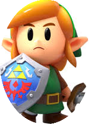
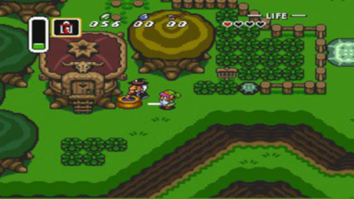

a jornada de link em "A Link To the Past" mostra sua jornada como aventureiro,e ajudante da princesa.

Para mais informações,assista os vídeos a seguir: /ZeldaHistoria - Acesse O site e Embarque Nessa Aventura.Rua badarosca alargada. 1992 jardin das alamedos
Como ja dizia Ishin Ashina
Hesitação é Morte